ANTI-LOCK BRAKES (ABS BOSCH 5.3)
- Path
- Descriptions > 33 BRAKING SYSTEM > ANTI-LOCK BRAKES (ABS BOSCH 5.3)
- Kind
- system description
- Applies to
- all engines; all production periods
- Interactive page
- https://sloeber94.github.io/elrnDB-fDct/en/#/244000427
Applies to: all engines; all production periods
COMPOSITION
The Bosch 5.3 ABS is extremely compact (easy to fit), light and reliable.
The use of new microhybrid type electronic components, the improvement of the magnetic flows achieved through the new design compact shape of the valve bodies and the reduction in the number of components as a result of pressing the jets directly in the valve seat has allowed the improvements in the solenoid valve modulating specifications.
In addition to the anti-lock function, the system controls the distribution of the brake force between the front and rear axles via the EBD function (Electronic Brake-force Distribution) allowing the traditional load proportioning valve on hydraulic braking systems to be dispensed with. In addition to the ABS and EBD systems, some versions may be equipped with an ASR function (ANTI-SLIP REGULATOR).
The main system components are:
- electronic control unit;
- an electro-hydraulic control unit that modulates the braking pressure at the brake calipers by means of eight solenoid valves, two for each wheel;
- four sensors (5) and (8), one for each wheel, that detect the rotation speed of the actual wheels.
Diagram showing Bosch 5.3 ABS anti-lock brakes
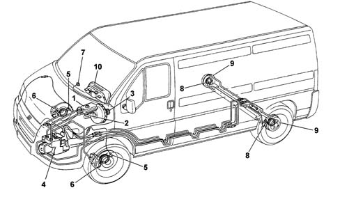
- 1 - Brake fluid reservoir;
- 2 - Master cylinder for front and rear wheel brake circuit;
- 3 - Vacuum brake servo;
- 4 - Electro-hydraulic control unit with electronic control unit incorporated;
- 5 - Front wheel rpm sensor;
- 6 - Front disc brakes;
- 7 - Failure warning light;
- 8 - Rear wheel rpm sensor;
- 9 - Rear drum brakes;
- 10 - Control panel (braking system failure warning light).
The following complete the system:
- the hydraulic system pipes;
- specific electrical wiring;
- a switch on the brake pedal for detecting the braking conditions;
- a warning light (7) in the control panel.
COMPONENTS
Electro-hydraulic unit
The electro-hydraulic unit consists of two sections fastened to one another: an electronic type control unit and an electro-hydraulic type one.
The electronic control unit is connected to the ABS wiring by means of a multiple connector with 31 terminals.
According to the signals coming from the sensors and, with the assistance of programmes stored in its memories, the electronic control unit controls the electro-hydraulic control unit.
The electro-hydraulic control unit is connected to the brake pump and to the ABS components by means of the braking system pipes.
Electronic control unit
The electronic control unit consists of hybrid circuits with resistances, diodes, transistors and integrated logic circuits. The core of the system consists of two CMOS microprocessors with 16 K of ROM which run the same programme independently with feed back. Both receive the same input signals that they each process individually and only when the results obtained are identical does the electronic control unit give the operational command to the electro-hydraulic control unit.
If this is not the case, for example, if there is a problem in the anti-lock braking system, the device switches itself off and braking takes place conventionally; the failure warning light in the control panel comes on at the same time.
The information relating to the fault is stored in a non volatile memory; in effect, one of the two microprocessors has a CMOS EEPROM whose contents are preserved even if the battery voltage fails. The task of the this memory is to preserve the fault codes so that they can be read in a service situation using the diagnostic equipment.
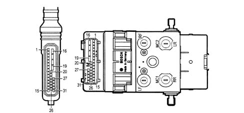
The (alternating or analogue type) signals sent by the rpm sensors to the electronic control unit are transformed into square wave (or digital type) signals by the inlet amplifier.
The frequency of these signals provides the control unit with the corresponding speed, acceleration or deceleration values for the individual wheels.
A reference speed is processed from the combination of the individual wheel peripheral speeds and it is continuously updated thereby indicating the speed of the vehicle at any given moment.
When the driver press the brake pedal, the wheels can decelerate at different rates: comparing the peripheral speeds of the individual wheels with the reference speed allows a constant check on the slipping of each individual wheel.
If the braking force causes one wheel to slip in relation to the others, the electronic control unit gives the command to the electro-hydraulic control unit solenoid valves to reduce the braking force at the wheel where there is a loss of grip. The wheel concerned therefore picks up speed.
The electronic control unit also stores the acceleration and deceleration levels that should never be exceeded for each individual wheel.
The rolling of the braking tyre is therefore kept in check by means of a systematic, continuous and extremely rapid comparison of the slipping, deceleration and acceleration figures for the wheel.
As soon as the combined slip and acceleration/deceleration levels are exceeded, the electronic control unit intervenes operating the electro-hydraulic control unit solenoid valves in the three regulation stages decreasing, maintaining or increasing the pressure produced by the driver on the brake pedal at the brake calipers, restoring the braking condition to the optimum system values.
These stages determine an intermittent, but extremely rapid regulation cycle that is repeated until the vehicle stops. The electronic control unit operates the different stages, providing the solenoid valves with impulses of different current intensity. It also ensures that both rear wheels are provided with the same braking force applied to the rear wheel most likely to lock, i.e. the one with less grip (to ensure the best trajectory stability).
In the case of a wheel where the tyre is limp, the ABS intervenes, if necessary, controlling the braking conditions.
The ABS is also activated when braking whilst reversing.
Usually the intervention of the device stops at speeds below 2.75 km/h to allow the wheels to lock fully with the vehicle stationary.
If chains are fitted, the rolling condition gives rise to signals that, suitably filtered in the control unit, ensure that the anti-lock brakes are not switched off when driving over hard, compact snow.
In limited grip conditions and/or incorrect distribution of the drive torque (acquaplaning), the electronic control unit is informed, by the rpm sensors fitted on each wheel, of the irregular conditions whilst driving because the drive wheels tend to rotate at a different speed from the driven ones.
This condition leads to an electronic control unit adjustment cycle that does not meet the requirements; the anti-lock brakes are temporarily switched off (without the warning light necessarily coming on as it is so brief) and are then switched back on when the reduced grip conditions are over.
The electronic control unit has a safety circuit which has the task of supervising the efficiency of the braking system before setting off and whilst driving.
The safety circuit carries out the following self- checks:
- 1 after inserting the ignition key and for around 4 seconds, it checks the operation of the control unit, the relays that operate the solenoid valves and the connection of the sensors;
- 2 after the engine has been started, as soon as 6 km/h is exceeded, it operates the solenoid valves and the recovery pump for an operational check; it also checks for the presence of the 4 speed signals;
- 3 each time 24 km/h is exceeded, starting with the vehicle stationary, it checks for the presence of the 4 speed signals;
- 4 whilst driving it constantly compares the peripheral speed of the wheels with the reference speed calculated, checks the memory conditions and oversees the operation of the two relays;
- 5 whilst driving it constantly checks the battery voltage.
If one of these problems is detected, the anti-locking braking system guarantees the normal operation of the conventional braking system and switches itself off notifying the driver by lighting up the failure warning light in the instrument panel.
The electronic control unit is informed that the driver is braking by the signal arriving from the switch on the brake pedal. This information is useful both for controlling the braking and, especially in certain conditions, such as for example, during sharp acceleration that causes the wheels to slip or in the case of uneven road surfaces (cobblestones) that can lead to variations in the speed of the wheels as a result of matters unrelated to the braking in progress.
Under these circumstances the microprocessors process a strategy linked to the variations in the speed of the wheels at these times ensuring that the braking in progress is within the correct parameters. Since there are specific braking control conditions, a failed connection of the brake pedal switch to the control unit does not adversely affect the efficiency of the system. For this reason it is not signalled by the warning light coming on and the ABS is not disabled.
Electro-hydraulic control unit
The electro-hydraulic control unit is connected to the brake pump and to the brake caliper cylinders by means of the braking system pipes and together with the electronic control unitmakes up the electro-hydraulic unit.
Its task is to vary the pressure of the brake fluid in the brake caliper cylinders corresponding to the control signals cming from the electronic control unit.
It consists of eight two-way solenoid valves (two for each hydraulic circuit) and a dual circuit recovery pump (2).
The eight solenoid valves and the recovery pump are operated by the electronic control unit according to the signals for the four rpm sensors. In particular, the pump allows the recovery of the brake fluid during the pressure reduction stage making it available again upstream of the solenoid valves for the subsequent pressure increase stage.
The accumulators make it possible to absorb brake fluid during the pressure reduction stage.
The unit is connected to the braking system by means of connectors that can be identified by the codes illustrated.
The electro-hydraulic control unit cannot be overhauled and should not be tampered with.
It is supplied as spares filled with (DOT 3) brake fluid and with the solenoid valves not supplied.
The operation of bleeding and refilling the braking system is the same as that for a traditional system.
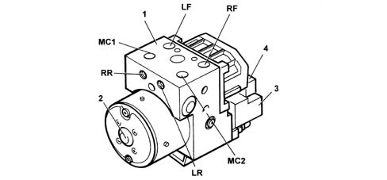
- MC1 - Supply connector from brake pump M10x1;
- MC2 - Supply connector from brake pump M10x1;
- LF - Supply connector to left front brake caliper M10x1;
- LR - Supply connector to left rear brake caliper M10x1;
- RF - Supply connector to right front brake caliper M12x1;
- RR - Supply connector to right rear brake caliper M12x1;
- 1 - Electro-hydraulic control unit;
- 2 - Recovery pump;
- 3 - Electronic control unit;
- 4 - 31 terminal connector
Wheel rpm sensors
The rpm sensors provide the electronic control unit with all the information needed to operate the electro-hydraulic unit.
They measure the driving speed, acceleration, deceleration and wheel slipping.
The sensors are the inductive type and are fitted in special housings located in the front and rear wheel dampers.
The magnetic flow lines close through the teeth of a flywheel facing the sensor rotated by the wheel. The passage from full to empty depending on whether or not a tooth is present causes a variation in the magnetic flow that is sufficient to produce an electro-motive force at the sensor terminals and consequently an alternating electrical signal at the electronic control unit.
The internal sensor elements (coil and permanent magnet) are completely submerged in a protective resin and surrouneded by a plastic casing. A brass fitted on the sensor casing is designed to fasten the latter without distortions.
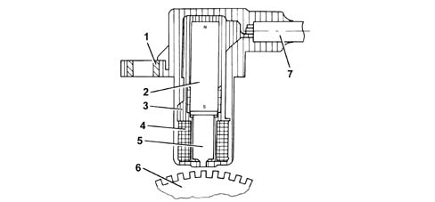
- 1 - Brass bush;
- 2 - Permanent magnet;
- 3 - Plastic sensor casing;
- 4 - Winding or coil;
- 5 - Core;
- 6 - Ring gear or flywheel;
- 7 - Coaxial paired cable or electrical connection.
The recommended distance (gap) between the end of the sensor and the flywheel for obtaining correct signals should be:
- 0.64 - 1.30 mm for the front wheels;
- 0.25 - 1.15 mm for the rear wheels;
This distance is not adjustable. If the gap is found to be outside the tolerance limits, check the condition of the sensor and phonic wheel.
The sensor resistance is equal to 1600 ± 100 Ohm
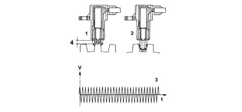
- 1 - Maximum magnetic flux;
- 2 - Minimum magnetic flux;
- 3 - Induced alternating voltage;
- 4 - Gap.
Front wheel rpm sensor position.
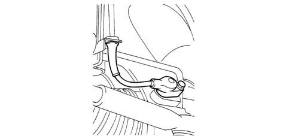
Rear wheel rpm sensor position.
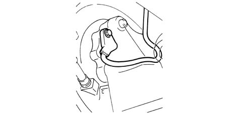
ABS failure warning light
ABS failure warning light
- 1 - ABS control unit;
- 2 - ABS warning light;
- D1 - protective diode;
- D2 - LED;
- R1 and R2 - pressurizing resistances
The new type ABS failure warning light is the so-called "intelligent" type no longer consisting of a conventional type bulb, but an LED (D2) integrated in an electronic circuit which, produced as illustrated in the diagram, allows the warning light to remain on, not only when there is a problem with the ABS, but also if the connector is not connected to the control unit (pin 20) or if the wire between pin 20 of the control unit (1) and the warning light connector (2) is short circuited to earth.
In effect, as the warning light is supplied by the voltage controlled by the ignition switch (+15) it is only off if the warning light (2) receives the battery voltage for the ABS control unit (1).
With the ignition key in the ON position, the red coloured ABS failure warning light comes on.
The warning light goes out after about 2 seconds (if the control system does not detect any faults).
If the warning light remains on, this means that there is a problem with one or more of the ABS components. Under these circumstances the ABS is disabled and braking takes place conventionally.
If the warning light does not come on (with the key inserted), then the cause of the problem should be sought in the warning light LED or in the electrical connection (+15) between the ignition switch and the warning light.
The ABS switches off at around 3 km/h.
The system test cycle starts when the speed of the vehicle is about 6 km/h. If the responses from the system components are positive, the warning light remains off. If the response is negative, the warning light comes on and the ABS is automatically deactivated. Braking takes place conventionally.
If the battery is not properly charged, the warning light may come on and the ABS may be switched off , for example, when driving in town at low speed with all the consumers switched on.
EBD function failure warning
The EBD function failure is signalled by the ABS warning light coming on at the same time as the braking system failure warning light in the instrument panel lighting up.
The warning light in the instrument panel coming on without the ABS warning light (2) coming on does not indicate an EBD malfunction, but one of the other problems signalled (low brake fluid level, brake pad wear, handbrake applied).
If there is an EBD function failure, the distribution of the brake force between the front and rear axles starts to fail with a consequent risk of the rear wheels locking during braking in certain conditions.
DESCRIPTION OF THE OPERATION OF THE ANTI-LOCK BRAKING SYSTEM
Rest position
Each branch of the Bosch 5.3 ABS hydraulic circuit is equipped with two two-way solenoid valves; all the solenoid valves are managed by the control unit (1).
When the pressurizing solenoid valve (9) is deactivated (not earthed by the control unit) it is in an open position, thereby allowing the flow of fluid to the brake caliper.
The pressure maintenance is achieved by closing this valve, i.e. providing it with an electrical supply.
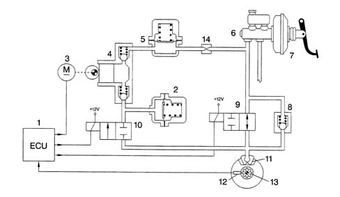
- 1 - Electronic control unit;
- 2 - Low pressure accumulator (reservoir);
- 3 - Recovery pump motor;
- 4 - Recovery pump;
- 5 - High pressure accumulator (damping chamber);
- 6 - Brake pump;
- 7 - Brake servo;
- 8 - Rapid pressure reduction valve;
- 9 - Pressurizing solenoid valve;
- 10 - Discharging solenoid valve;
- 11 - Brake caliper;
- 12 - Rpm sensor;
- 13 - Phonic wheel;
- 14 - Restricter.
When the discharging solenoid valve (10) is deactivated (not earthed by the control unit) it is closed and does not allow the discharge of the fluid to the low pressure accumulator (2).
The accumulators (2) and (5) have the task of temporarily storing the brake fluid that is available during the pressure reduction stage.
The recovery pump (4) sends the brake fluid that flows from the brake calipers during the pressure reduction stage to the brake pump via the accumulator.
On the basis of the signals received by the rpm sensors on the front and rear wheels, the electronic control unit operates the electro-hydraulic control unit that, in turn, varies the pressure of the brake fluid sent to the calipers in accordance with three stages: pressure increase, maintenance or decrease.
Pressure increase stage
Pressure increase stage.
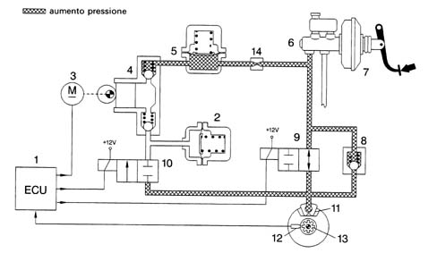
- 1 - Electronic control unit;
- 2 - Low pressure accumulator (reservoir);
- 5 - High pressure accumulator (damping chamber);
- 6 - Brake pump;
- 7 - Brake servo;
- 8 - Rapid pressure reduction valve;
- 9 - Pressurizing solenoid valve;
- 10 - Discharging solenoid valve;
- 3 - Recovery pump motor;
- 4 - Recovery pump;
- 11 - Brake caliper;
- 12 - Rpm sensor;
- 13 - Phonic wheel;
- 14 - Restricter.
When the driver presses the brake pedal, the pressure produced by the brake pump (6) reaches the brake caliper without undergoing variations because the hydraulic unit solenoid valves (9) and (10) are earthed by the electronic control unit.
When the braking force increases, the deceleration of the wheel consequently increases: this causes the vehicle to decelerate faster (i.e. the slipping of the wheel increases).
The slipping should never exceed a certain value after which the wheel will no longer grip the ground and loose direction and increase the braking distance.
The rpm sensor (12) signals that the deceleration values reached will adversely affect the grip of the wheel on the ground: at this point the electronic control unit (1) operates the electro-hydraulic unit solenoid valves, reducing the braking force and allowing the speed of the wheel to increase to regain its grip.
Pressure maintenance stage
Pressure maintenance stage
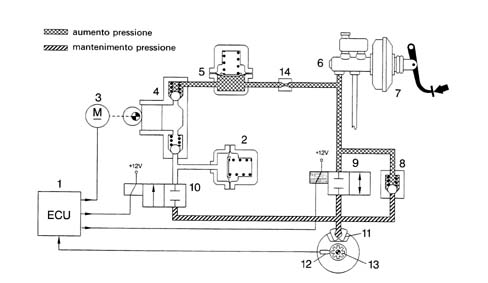
- 1 - Electronic control unit;
- 2 - Low pressure accumulator (reservoir);
- 3 - Recovery pump motor;
- 4 - Recovery pump;
- 5 - High pressure accumulator (damping chamber);
- 6 - Brake pump;
- 7 - Brake servo;
- 8 - Rapid pressure reduction valve;
- 9 - Pressurizing solenoid valve;
- 10 - Discharging solenoid valve;
- 11 - Brake caliper;
- 13 - Phonic wheel;
- 12 - Rpm sensor;
- 14 - Restricter.
During this stage the electronic control unit (1) earths the pressurizing solenoid valve (9) which closes, whilst the discharging solenoid valve (10) is already closed as it is not earthed.
The hydraulic connection between the brake pump (6) and the brake caliper (11) is interrupted (stand-by). The pressure in the brake caliper (11) is kept constant at the value reached previously also increasing the pressure on the brake pedal.
In spite of the braking force maintaining a continuous slowing down action, the speed of the wheel varies according to the grip on the ground until the rpm sensor (12) signal detects a value that is comparable to the reference speed calculated by the electronic control unit (1).
At this point the control unit moves from the maintenance stage to the pressure increase stage (if the wheel is accelerating) or to the pressure reduction stage (if the wheel tends to lock).
Pressure reduction stage
Pressure reduction stage.
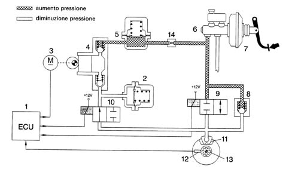
- 1 - Electronic control unit;
- 2 - Low pressure accumulator (reservoir);
- 3 - Recovery pump motor;
- 4 - Recovery pump;
- 5 - High pressure accumulator (damping chamber);
- 6 - Brake pump;
- 7 - Brake servo;
- 8 - Rapid pressure reduction valve;
- 9 - Pressurizing solenoid valve;
- 10 - Discharging solenoid valve;
- 11 - Brake caliper;
- 12 - Rpm sensor;
- 13 - Phonic wheel;
- 14 - Restricter.
The electronic control unit (1) measures the tendency of the wheels to lock and activates the electro-hydraulic control unit to contain the deceleration of the wheel within the pemitted limits.
The electronic control unit (1) earths the pressurizing (9) and discharging (10) solenoid valves.
The pressurizing solenoid valve (9) remains closed keeping the connection between the brake pump (6) and the brake caliper (11) inaterrupted; the discharging solenoid valve (10) opens producing a hydraulic connection between the brake caliper (11) with the low pressure accumulator (2) and the recovery pump (4) to remove some of the fluid at the brake caliper (11) and decrease the pressure at the actual caliper.
At the same time the electronic control unit (1) supplies the motor (3) driving the scavenger pump (4) to return fluid taken from brake caliper (11) to the main circuit.
The accumulator (2) or the low pressure reservoir in the circuit has the task of stroing some of the brake fluid removed from the calipers. The brake fluid is drawn off via the recovery pump circuit (4) and sent, via the damping chamber (5) and the restricter (14) to the brake pump (6) main circuit.
A series of pressure waves (or hydraulic thrusts) are produced during this stage that are weakened by the damping chamber (5) and the restricter (14).
During brake gentle thrusts on the brake pedal should be considered normal during the intervention of the ABS. During this stage the wheels tends to return to the reference speed calculated by the electronic control unit (1) as a result of the decrease in the braking force.
The type of braking is therefore intermittent or in steps with a succession of stages dictated by the rolling conditions of the braking wheel and dependent on repetitive cycle that the driver is unaware of in the form of sharp jerks depending on the speed and frequency and the inertia of the wheel which, according to the intervention speed of the device, prevents the actual wheel from reaching extreme slipping coefficients.
With the ABS not working, the driver manages to intervene intermittently on the brake pedal with a frequency of 2 cycles per seconds (2 presses and 2 releases).
With the ABS working, the cycles increase to 4 - 10 per second (depending on the grip).
Usually the intervention of the device stops at speeds below 2.75 km/h to allow the wheels to lock fully with the vehicle stationary.
Release of brake pedal
Release of brake pedal
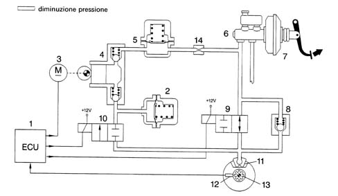
- 1 - Electronic control unit;
- 2 - Low pressure accumulator (reservoir);
- 3 - Recovery pump motor;
- 4 - Recovery pump;
- 5 - High pressure accumulator (damping chamber);
- 6 - Brake pump;
- 7 - Brake servo;
- 8 - Rapid pressure reduction valve;
- 9 - Pressurizing solenoid valve;
- 10 - Discharging solenoid valve;
- 11 - Brake caliper;
- 12 - Rpm sensor;
- 13 - Phonic wheel;
- 14 - Restricter.
The system is fitted with a single-acting valve (8), located in parallel to the inlet solenoid valve (9) to allow a rapid reduction in the pressure at the brake caliper (11) when the brake pedal is released.
EBD function (electronic brake-force distribution)
The introduction of the ABS 5.3 allows the distribution of the braking force between the front and rear axles using a specific electronic control unit function.
With this in mind the electronic control unit continuously compares the speed of the front and rear wheels by means of speed sensors and operates the electro-hydraulic control unit to prevent the rear wheels from locking always making use of the maximum grip on the ground in all load conditions.
The EBD function makes the use of a hydraulic load proportioning valve operating according to the load on the rear axle superfluous so it has been eliminated from the braking circuit.
The graph below illustrates the operation of the EBD (curve D) in relation to the pressure in the braking system (curve A), the ideal pressure at the rear axle brakes (curve B) and the reduction in pressure at the rear axle brakes normally implemented by the traditional load proportioning valve (curve C).
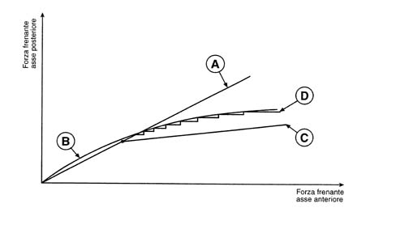
- A - Distribution implemented by the brake system;
- B - Ideal distribution;
- C - Distribution implemented by the mechanical load proportioning valve;
- D - EBD control.
As can be seen, the ABS EBD function is capable of adapting to the ideal pressure curve taking advantage of the grip available in all braking conditions.
The integration of the EBD function in the ABS implementation logic allows the simultaneous operation of the the two strategies; as a result the system interevenes normally to keep the slipping of the rear wheels as close to the ideal value as possible, with the possibility of intevening with the ABS strategy when one of the rear wheels tends to lock (for example on a surface with poor grip).
The graph below illustrates the braking pressure implementation strategy, operated by the electronic control unit, dependent on the input data, represented by the signal for the rotation speed of the wheels on the two axles.
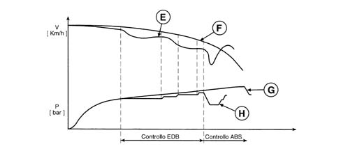
- E - Rear wheel speed;
- F - Front wheel speed;
- G - Front wheel pressure;
- H - Rear wheel pressure.
EOBD operation
The braking pressure for the rear axle wheels is implemented by the control unit in the same way as described for the operation of the ABS during the "Pressure maintenance stage" and the "Pressure reduction stage" with the difference being that the recovery pump is not activated and any excess hydraulic fluid is collected in the low pressure accumulator. The fluid returns to the supply circuit when the brakes are released.
ASR function (anti-slip regulator)
In addition to ABS EBD, depending on the version, the New Ducato vehicles are fittedd in ASR systems.
Specifications
A.S.R. CONTROL/REGULATION DEVICES
These carry out the functions of:
- acceleration slipping adjustment (A.S.R.);
- locking the differential through action on the brakes (T.C.).
These functions are carried out through action on the drive torque and the application of a braking force on one or both the drive wheels.
If, during acceleration, one or both the drive wheels tend to slip, the ABS control unit asks the engine management control unit to reduce the torque transmitted to the wheels and, almost at the same time, without any intervention by the user, brakes the wheel or wheels.
If, in the case of strong deceleration, the wheels tend to lock, the ABS control unit requests the engine management control unit to adjust the engine braking torque in order to prevent the instability of the vehicle.
The system can be excluded by activating the button in the centre console.
Activation of the control panel warning light indicates that the ASR is switched off.
The warning light in the panel coming on indicates that the system is excluded on account of a fault recorded by the control unit.
The intervention of the ASR is signalled by the flashing of the warning light in the instrument panel.
Each time the vehicle is started up the ASR function is activated even if the function was switched off when the vehicle was switched off.
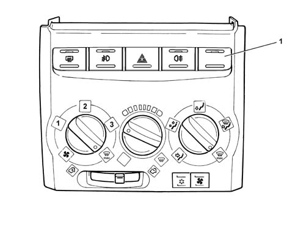
- 1 - A.S.R. on/off button
Composition
The system consists of:
- a specific electronic control unit integrated with the electro-hydraulic control unit;
- an electro-hydraulic control unit that modulates the pressure acting on the brakes, independently of the action by the user, by means of twelve solenoid valves;
- four PASSIVE type sensors;
- specific wiring.
Operating principles
The system works through signals coming from the passive sensors, the brake lights switch and the ASR on/off button.
It constantly compares the speed of the wheels on the same side of the vehicle (Right front with Right rear and Left front with Left rear) and when it detects a difference in speed, between the two wheels on the same side, of more than 2-6 km/h (intervention level) the ASR logic intervenes.
The ABS/ASR control unit converses continuously with the engine management control unit via the C-CAN line.
The ASR function is activated in all vehicle speed conditions, however, the intervention of the brakes is excluded above 80 km/h.
Operating logics - Drive wheel slipping - Intervention times in good road surface grip conditions (asphalt)
Engine torque reduction by the engine management control unit through the alteration of the injection/ignition advances, 6/100 of a second after the slipping limit is exceeded.
A further reduction in torque through a decrease in the throttle opening (by the engine management control unit through the motorized throttle body after 15/100 of a second).
Intervention of the hydraulic system (braking force on the drive wheels) after 2/10 of a second.
Operation in poor grip conditions
The system is capable of recognizing these conditions by comparing the acceleration of the drive wheels with the torque transmitted by the engine (engine load from the engine management control unit).
The system behaves in the same way as for both drive wheels slipping in good road grip conditions (asphalt) and the intervention levels are at the lower limit.
Slipping of one drive wheel only
Torque reduction by the engine management control unit through the alteration of the ignition advances, 6/100 of a second after the slipping limit is exceeded.
A further reduction in torque through a decrease in the throttle opening (by the engine management control unit through the motorized throttle body after 15/100 of a second).
Intervention of the hydraulic system, a braking action exerted on the wheel that it slipping to guarantee a resistive force on the side with poor grip (T.C.).
This resistive force allows the differential to transmit an equal torque with good grip.
Slipping of one wheel round bends in good grip conditions (asphalt)
The system recognizes the bend from the speed of the rear wheels (driven).
The system implements the same operating mode described for the "Slipping of one drive wheel only" condition with the intervention levels at the upper limit. The torque reduction is applied gently.
Slipping of one wheel round bends in poor grip conditions (snow-ice)
The system implements the same operating mode described for the "Slipping of one drive wheel only" condition with the intervention levels at the lower limit. The torque reduction is accentuated to ensure good side road holding.
Vehicle unstable during deceleration with poor grip
The system recognizes this condition from the engine load, from the speed of the front and rear wheels and from the brake pedal sensor. In this case there is an increase in drive torque through the intervention of the engine management control unit opeing the motorized throttel to overcome the natural instability of the vehicle due to the engine braking torque in poor grip conditions.
ASR system exclusion
If the system is excluded using the button, which is advisable when the vehicle is travelling over difficult surfaces (e.g. snow, ice, deep mud, sand or gravel) or when snow chains are fitted on the drive wheels, the ABS and EBD functions remain activated.
Intervention levels
The different intervention levels between 2 and 6 km/h depend on environmental factors; some of the conditions have been described in the operating logics, others are:
- high acceleration level;
- vehicle speed (see graph);
- type of tyres (normal or winter); with winter tyres and good grip, high intervention levels, e.g. with winter tyres and poor grip, low intervention levels. The system is capable of recognizing these conditions by comparing the acceleration of the drive wheels with the torque transmitted by the engine (engine load from the engine management control unit).
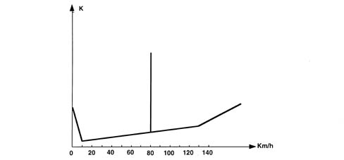
- K - Slipping level
Operation of the hydraulic system
The electro-hydraulic unit on the version equipped with ASR has 4 additional solenoid valves.
When the (normally closed) intake solenoid valve is activated, the additional quantity of fluid required to increase the pressure and brake the wheel(s) can be received.
When the (normally open) solenoid valve is activated it allows the modulated pressure produced by the pump necessary for the intervention of the ASR to be maintained in the brake caliper-pump circuit.
When the ASR TC function is not switched on, the electronic control unit:
- does not supply the (N.C.) intake solenoid valve (2).
- does not supply the (N.A.) solenoid valve (3).
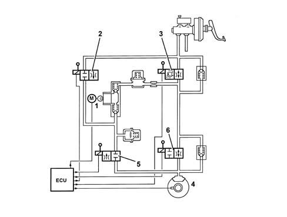
- 1 - Pump;
- 2 - Intake solenoid valve;
- 3 - Operating solenoid valve;
- 4 - Brake caliper;
- 5 - Discharging solenoid valve;
- 6 - Pressurizing solenoid valve.
When the ASR/TC function is switched on, the electronic control unit:
Therefore the pressure produced by the pump (1) reaches the brake caliper and is modulated, on the request of the electronic control unit, by the discharge (5) and pressurizing (6) solenoid valves.
BOSCH 5.3 ABS HYDRAULIC SYSTEM DIAGRAM
Dual circuit, cross-over braking circuit.
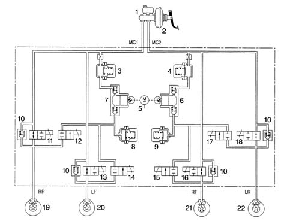
- 1 - Brake pump;
- 2 - Brake servo;
- 3 - High pressure accumulator (damping chamber);
- 4 - High pressure accumulator (damping chamber);
- 5 - Recovery pump motor;
- 6 - Recovery pump;
- 7 - Recovery pump;
- 8 - Low pressure accumulator (reservoir);
- 9 - Low pressure accumulator (reservoir);
- 10 - Rapid pressure reduction valve;
- 11 - Right rear pressurizing solenoid valve;
- 12 - Right rear discharging solenoid valve;
- 13 - Left front pressurizing solenoid valve;
- 14 - Left front discharging solenoid valve;
- 15 - Right front pressurizing solenoid valve;
- 16 - Right front discharging solenoid valve;
- 17 - Left rear pressurizing solenoid valve;
- 18 - Left rear discharging solenoid valve;
- 19 - Right rear drum brake;
- 20 - Left front disc brake;
- 21 - Right front disc brake;
- 22 - Left rear drum brake;
- MC1 - Supply connector for brake pump 1st stage;
- MC1 - Supply connector for brake pump 2nd stage;
- RR - Supply connector at right rear cylinder;
- LF - Supply connector to left front brake caliper;
- RF - Supply connector to right front brake caliper;
- LR - Supply connector at left rear cylinder;
BOSCH 5.3 ABS WIRING DIAGRAM
Bosch 5.3 ABS wiring diagram
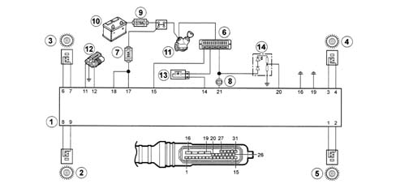
- 1 - Electronic control unit;
- 2 - Left rear rpm sensor (LR);
- 3 - Left front rpm sensor (LF);
- 4 - Right front rpm sensor (RF);
- 5 - Right rear rpm sensor (RR);
- 6 - Fuse box (10A protective fuse);
- 7 - 60A Protective fuses;
- 8 - Preheating warning light in instrument panel;
- 9 - 175A maxi fuse;
- 10 - Battery;
- 11 - Ignition switch;
- 12 - Tester input;
- 13 - Brake light switch;
- 14 - ABS warning light.
Identification of terminals are electronic control unit and connector.
Pin | Destination |
|---|---|
1 | To the right rear rpm sensor |
2 | To the right rear rpm sensor |
3 | To the right front rpm sensor |
4 | To the right front rpm sensor |
5 | Spare |
6 | To the left front rpm sensor |
7 | To the left front rpm sensor |
8 | To the left rear rpm sensor |
9 | To the left rear rpm sensor |
10 | Spare |
11 | To the diagnostic socket |
12 | Spare |
13 | Spare |
14 | To the brake lights switch |
15 | +15 Supply |
16 | To the earth |
17 | +30 Supply |
18 | +30 Supply |
19 | To the earth |
20 | ABS failure warning light |
21 | EBD failure warning light |
22 | Spare |
23 | Spare |
24 | Spare |
25 | Spare |
26 | Spare |
27 | Spare |
28 | ASR warning light |
29 | CAN L |
30 | CAN H |
31 | ASR switch |
The Bosch 5.3 ABS electrical system is specific; the electrical connections between the individual components namely the four wheel rpm sensors, the failure warning light, the brake light switch, the diagnostic socket, the power suplies, etc. are joined to form a cable loom with a multiple connector with 31 terminals.
The installation of this cable loom is protected against water because any oxidation or corrosion could give rise to high contact resistances; this could result in an excessive drop in pressure in some cables (in relation to the electronic control unit) causing the malfunction of the entire system resulting it in being switched off prematurely or in limited operation of the solenoid valves and the recovery pump which is reflected in prolonged switching times and a reduced capacity.
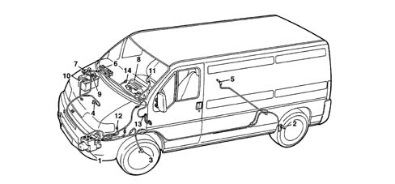
- 1 - Electronic control unit;
- 2 - Left rear rpm sensor;
- 3 - Left front rpm sensor (LF);
- 4 - Right front rpm sensor (RF);
- 5 - Right rear rpm sensor (RR);
- 6 - Fuse box (10A protective fuse);
- 7 - 60A Protective fuses;
- 8 - Braking failure warning light;
- 9 - 175A maxi fuse;
- 10 - Battery;
- 11 - Ignition switch;
- 12 - Tester input;
- 13 - Brake light switch;
- 14 - ABS warning light.
The electronic unit (1) is supplied directly by the battery (10) via two fuses: one 60A fuse (7) located on the right of the engine compartment, as illustrated, protected by a cover at terminals 17 and 18 and by the ignition switch (11) via the 10A fuse in the fuse box (6) at terminal 15. The earth is connected at terminals 16 and 19.
The control unit contains two relays that cannot be replaced but, precisely because of this their operation is guaranteed; one allows the supply of the eight solenoid valvess in accordance with the microprocessors commands, the other allows the supply of the recovery pump always dependent on the microprocessor control.
The circuit for the brake pedal switch closes at the control unit via terminal 14 when the brake pedal is pressed; this connection is used by the electronic control unit to control braking in certain conditions. It is not essential so that a faulty connection does not adeversely affect the efficiency of the system: for this reason it is not signalled by the warning light coming on.
The red coloured fault warning light, located in the dashboard, is supplied by the ignition switch (+15) and the ABS control unit (pin 20); it remains on as commanded by the microprocessor if a fault is confirmed to notify the driver that the ABS is disabled and braking is only taking place conventionally; its coming on also signals any faults in the electrical connections for the actual warning light.